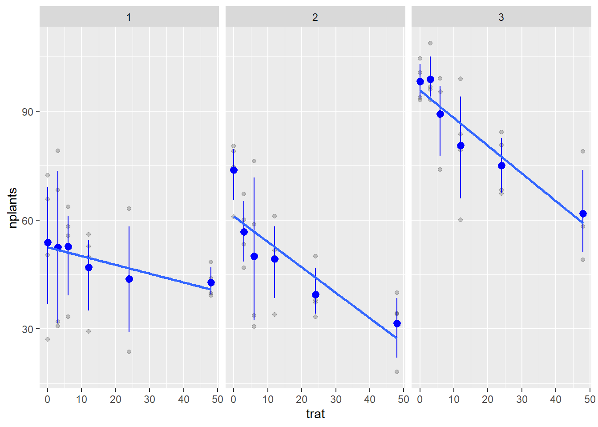
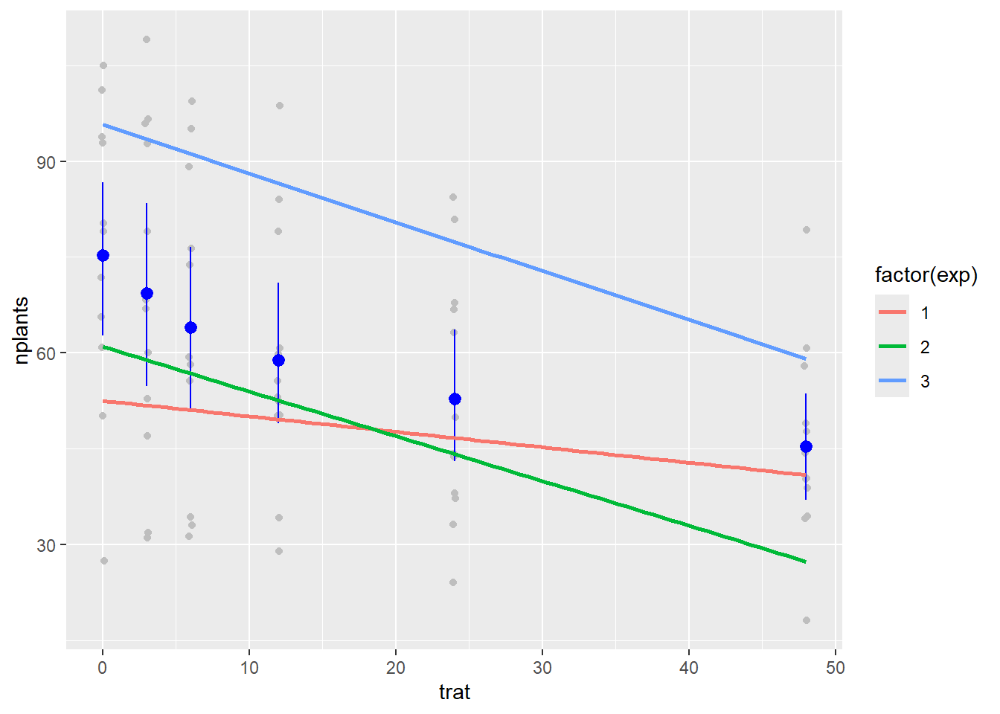
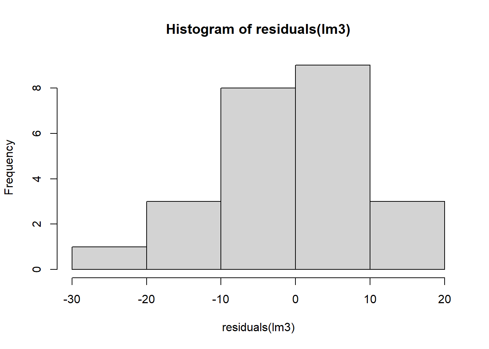
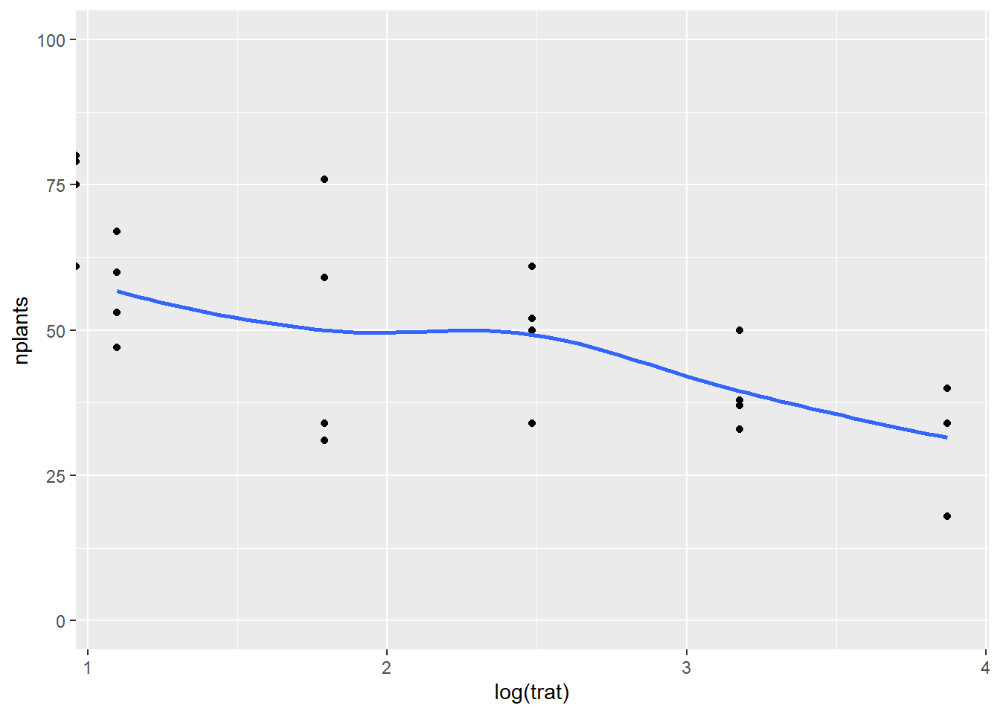

library(tidyverse)
library(gsheet)
milho <- gsheet2tbl("https://docs.google.com/spreadsheets/d/1bq2N19DcZdtax2fQW9OHSGMR0X2__Z9T/edit#gid=1345524759")aula 9
Modelo misto
Um experimento pode ser realizado com diferentes arranjos, ou seja, a forma como dois ou mais fatores estudados ao mesmo tempo são esquematizados. Os arranjos mais utilizados são o fatorial e parcelas subdivididas, podendo ser também combinados.
Importação dos dados
Visualização
milho %>%
ggplot(aes(hybrid, index)) +
geom_col()milho %>%
ggplot(aes(hybrid, yield)) +
geom_col()milho %>%
ggplot(aes(method, index)) +
geom_jitter(width = 0.01, alpha = 0.2)+
facet_wrap(~ hybrid) +
stat_summary(fun.data = "mean_cl_boot", size = 0.5, color= "blue")milho %>%
ggplot(aes(method, yield)) +
geom_jitter(width = 0.01, alpha = 0.2)+
facet_wrap(~ hybrid) +
stat_summary(fun.data = "mean_cl_boot", size = 0.5, color= "blue")Anova parcela subdividida - Index
Para realização dessa análise, devemos considerar o bloco como um fator. Além disso, devemos observar a interação dos fatores híbrido e método, bem como com o bloco.
library(tidyverse)
library(lme4)
library(Matrix)
milho <- milho %>%
mutate(block = as.factor(block))
mix2 <- lmer(index ~ hybrid*method + block +
(1|block/hybrid), data = milho)
library(car)
Anova(mix2)Analysis of Deviance Table (Type II Wald chisquare tests)
Response: index
Chisq Df Pr(>Chisq)
hybrid 15.5971 5 0.008094 **
method 4.6963 1 0.030228 *
block 0.2157 3 0.975023
hybrid:method 15.8060 5 0.007420 **
---
Signif. codes: 0 '***' 0.001 '**' 0.01 '*' 0.05 '.' 0.1 ' ' 1Interpretação: Pelo menos um híbrido se diferencia dos demais. Assim como existe diferença significativa entre os métodos, existe diferença na interação híbrido com método
Checando as premissas
library(DHARMa)
plot(simulateResiduals(mix2))
library(performance)
check_normality(mix2)OK: residuals appear as normally distributed (p = 0.635).check_heteroscedasticity(mix2)Warning: Heteroscedasticity (non-constant error variance) detected (p = 0.009).Transformação para raiz quadrada e ANOVA
mix22 <- lmer(sqrt(index) ~ hybrid*method + block +
(1|block/hybrid), data = milho)
library(car)
Anova(mix22)Analysis of Deviance Table (Type II Wald chisquare tests)
Response: sqrt(index)
Chisq Df Pr(>Chisq)
hybrid 15.3159 5 0.009095 **
method 3.8886 1 0.048615 *
block 0.0718 3 0.994997
hybrid:method 13.3812 5 0.020057 *
---
Signif. codes: 0 '***' 0.001 '**' 0.01 '*' 0.05 '.' 0.1 ' ' 1Checando as premissas após transformação
library(DHARMa)
plot(simulateResiduals(mix22))
library(performance)
check_normality(mix22)OK: residuals appear as normally distributed (p = 0.440).check_heteroscedasticity(mix22)OK: Error variance appears to be homoscedastic (p = 0.971).Verificação dos grupos distintos estatisticamente
library(emmeans)
medias_milho <- emmeans(mix22, ~ hybrid | method,
type = "response")
medias_milho2 <- emmeans(mix22, ~ method | hybrid,
type = "response")
# quando transforma os dados e necessario adicionar type = response
library (multcomp)
cld (medias_milho,Letters = LETTERS)method = pin:
hybrid response SE df lower.CL upper.CL .group
BG7049H 19.4 10.7 6084 4.10 46.0 A
30K64 20.3 10.9 6084 4.51 47.4 A
30F53 YH 24.5 12.0 6084 6.61 53.7 AB
30F53 HX 25.0 12.1 6084 6.84 54.4 AB
30S31YH 31.7 13.7 6084 10.57 64.2 AB
30S31H 37.1 14.8 6084 13.79 71.8 B
method = silk:
hybrid response SE df lower.CL upper.CL .group
BG7049H 19.1 10.6 6084 3.96 45.6 A
30K64 21.3 11.2 6084 5.00 48.9 A
30F53 HX 24.4 12.0 6084 6.56 53.6 A
30F53 YH 26.0 12.4 6084 7.42 56.0 A
30S31H 26.3 12.5 6084 7.57 56.4 A
30S31YH 26.4 12.5 6084 7.62 56.5 A
Results are averaged over the levels of: block
Degrees-of-freedom method: kenward-roger
Confidence level used: 0.95
Intervals are back-transformed from the sqrt scale
Note: contrasts are still on the sqrt scale
P value adjustment: tukey method for comparing a family of 6 estimates
significance level used: alpha = 0.05
NOTE: If two or more means share the same grouping symbol,
then we cannot show them to be different.
But we also did not show them to be the same. cld (medias_milho2, Letters = LETTERS)hybrid = 30F53 HX:
method response SE df lower.CL upper.CL .group
silk 24.4 12.0 6084 6.56 53.6 A
pin 25.0 12.1 6084 6.84 54.4 A
hybrid = 30F53 YH:
method response SE df lower.CL upper.CL .group
pin 24.5 12.0 6084 6.61 53.7 A
silk 26.0 12.4 6084 7.42 56.0 A
hybrid = 30K64:
method response SE df lower.CL upper.CL .group
pin 20.3 10.9 6084 4.51 47.4 A
silk 21.3 11.2 6084 5.00 48.9 A
hybrid = 30S31H:
method response SE df lower.CL upper.CL .group
silk 26.3 12.5 6084 7.57 56.4 A
pin 37.1 14.8 6084 13.79 71.8 B
hybrid = 30S31YH:
method response SE df lower.CL upper.CL .group
silk 26.4 12.5 6084 7.62 56.5 A
pin 31.7 13.7 6084 10.57 64.2 A
hybrid = BG7049H:
method response SE df lower.CL upper.CL .group
silk 19.1 10.6 6084 3.96 45.6 A
pin 19.4 10.7 6084 4.10 46.0 A
Results are averaged over the levels of: block
Degrees-of-freedom method: kenward-roger
Confidence level used: 0.95
Intervals are back-transformed from the sqrt scale
Note: contrasts are still on the sqrt scale
significance level used: alpha = 0.05
NOTE: If two or more means share the same grouping symbol,
then we cannot show them to be different.
But we also did not show them to be the same. Anova parcela subdividida - Yield
mix3 <- lmer(yield ~ hybrid*method + block +
(1|block/hybrid), data = milho)
library(car)
Anova(mix3)Analysis of Deviance Table (Type II Wald chisquare tests)
Response: yield
Chisq Df Pr(>Chisq)
hybrid 25.5991 5 0.0001067 ***
method 0.1052 1 0.7456934
block 2.3564 3 0.5018078
hybrid:method 25.9302 5 9.206e-05 ***
---
Signif. codes: 0 '***' 0.001 '**' 0.01 '*' 0.05 '.' 0.1 ' ' 1Checando as premissas
library(DHARMa)
plot(simulateResiduals(mix3))library(performance)
check_normality(mix3)OK: residuals appear as normally distributed (p = 0.211).check_heteroscedasticity(mix3)Warning: Heteroscedasticity (non-constant error variance) detected (p < .001).Transformação para raiz quadrada
mix33 <- lmer(sqrt(yield) ~ hybrid*method + block +
(1|block/hybrid), data = milho)
library(car)
Anova(mix33)Analysis of Deviance Table (Type II Wald chisquare tests)
Response: sqrt(yield)
Chisq Df Pr(>Chisq)
hybrid 25.5591 5 0.0001086 ***
method 0.0520 1 0.8196750
block 2.3606 3 0.5010021
hybrid:method 24.4985 5 0.0001741 ***
---
Signif. codes: 0 '***' 0.001 '**' 0.01 '*' 0.05 '.' 0.1 ' ' 1Checando as premissas após transformação
library(DHARMa)
plot(simulateResiduals(mix33))
library(performance)
check_normality(mix33)OK: residuals appear as normally distributed (p = 0.214).check_heteroscedasticity(mix33)OK: Error variance appears to be homoscedastic (p = 0.686).Verificação dos grupos distintos estatisticamente
library(emmeans)
medias_milho3 <- emmeans(mix33, ~ hybrid | method,
type = "response")
medias_milho4 <- emmeans(mix33, ~ method | hybrid,
type = "response")
library (multcomp)
cld (medias_milho3,Letters = LETTERS)method = pin:
hybrid response SE df lower.CL upper.CL .group
30S31YH 7829 732 26.1 6398 9405 A
30S31H 8081 743 26.1 6626 9681 AB
30F53 YH 9314 798 26.1 7746 11027 ABC
30F53 HX 11130 872 26.1 9410 12995 BC
30K64 11666 893 26.1 9903 13574 C
BG7049H 11914 903 26.1 10131 13841 C
method = silk:
hybrid response SE df lower.CL upper.CL .group
30S31YH 8257 751 26.1 6785 9873 A
30F53 YH 9079 788 26.1 7532 10770 A
30S31H 9135 790 26.1 7583 10832 A
30F53 HX 9932 824 26.1 8311 11698 AB
30K64 10331 840 26.1 8676 12131 AB
BG7049H 12822 936 26.1 10970 14818 B
Results are averaged over the levels of: block
Degrees-of-freedom method: kenward-roger
Confidence level used: 0.95
Intervals are back-transformed from the sqrt scale
Note: contrasts are still on the sqrt scale
P value adjustment: tukey method for comparing a family of 6 estimates
significance level used: alpha = 0.05
NOTE: If two or more means share the same grouping symbol,
then we cannot show them to be different.
But we also did not show them to be the same. cld (medias_milho4, Letters = LETTERS)hybrid = 30F53 HX:
method response SE df lower.CL upper.CL .group
silk 9932 824 26.1 8311 11698 A
pin 11130 872 26.1 9410 12995 B
hybrid = 30F53 YH:
method response SE df lower.CL upper.CL .group
silk 9079 788 26.1 7532 10770 A
pin 9314 798 26.1 7746 11027 A
hybrid = 30K64:
method response SE df lower.CL upper.CL .group
silk 10331 840 26.1 8676 12131 A
pin 11666 893 26.1 9903 13574 B
hybrid = 30S31H:
method response SE df lower.CL upper.CL .group
pin 8081 743 26.1 6626 9681 A
silk 9135 790 26.1 7583 10832 B
hybrid = 30S31YH:
method response SE df lower.CL upper.CL .group
pin 7829 732 26.1 6398 9405 A
silk 8257 751 26.1 6785 9873 A
hybrid = BG7049H:
method response SE df lower.CL upper.CL .group
pin 11914 903 26.1 10131 13841 A
silk 12822 936 26.1 10970 14818 A
Results are averaged over the levels of: block
Degrees-of-freedom method: kenward-roger
Confidence level used: 0.95
Intervals are back-transformed from the sqrt scale
Note: contrasts are still on the sqrt scale
significance level used: alpha = 0.05
NOTE: If two or more means share the same grouping symbol,
then we cannot show them to be different.
But we also did not show them to be the same. Regressão linear
A análise de regressão permite estudar a relação entre uma variável dependente e uma ou mais variáveis independentes. Ela busca estimar uma equação que descreve a relação entre as variáveis.
Importação dos dados
library(gsheet)
estande <- gsheet2tbl("https://docs.google.com/spreadsheets/d/1bq2N19DcZdtax2fQW9OHSGMR0X2__Z9T/edit#gid=401662555")Visualização
Para visualização da reta referente a regressão linear utilizamos o argumento method = “lm” dentro da função geom_smooth().
estande %>%
ggplot(aes(trat,nplants)) +
geom_jitter(width = 0.01, alpha = 0.2) +
facet_wrap(~ exp) +
stat_summary(fun.data = "mean_cl_boot", size = 0.5, color= "blue") +
geom_smooth(method = "lm", se = F)
#se = F -> tira a barra de intervalo de confiança
estande %>%
ggplot(aes(trat, nplants, color = factor(exp)))+
geom_jitter(width = 0.1, color = "gray")+
stat_summary(fun.data = "mean_cl_boot", color = "blue")+
geom_smooth(method = "lm", se = F)
Modelo de melhor ajuste - Experimento 1
Para analisar cada experimento isoladamente, primeiro filtramos o conjunto de dados com a função filter(). Depois ajustamos os dados ao modelo linear por meio da função lm().
exp1 <- estande %>%
filter(exp == 1)
exp1 %>%
ggplot (aes(trat, nplants)) +
geom_point() +
ylim(0,100) +
geom_smooth(se = F) 
# modelo linear
lm1 <- lm(nplants ~ trat,
data = exp1)
summary(lm1)
Call:
lm(formula = nplants ~ trat, data = exp1)
Residuals:
Min 1Q Median 3Q Max
-25.500 -6.532 1.758 8.573 27.226
Coefficients:
Estimate Std. Error t value Pr(>|t|)
(Intercept) 52.5000 4.2044 12.487 1.84e-11 ***
trat -0.2419 0.1859 -1.301 0.207
---
Signif. codes: 0 '***' 0.001 '**' 0.01 '*' 0.05 '.' 0.1 ' ' 1
Residual standard error: 15 on 22 degrees of freedom
Multiple R-squared: 0.07148, Adjusted R-squared: 0.02928
F-statistic: 1.694 on 1 and 22 DF, p-value: 0.2066Interpretação: Se modelo linear é o que explica melhor, interceptaria em 52 Taxa de redução - 1 planta a cada 4% (-0.242) Ho - coeficiente angular igual a zero (modelo linear) pvalor = 0,21 - não rejeita Ho (taxa de redução não é diferente de zero)
Modelo de melhor ajuste - Experimento 2
exp2 <- estande %>%
filter(exp == 2)
exp2 %>%
ggplot (aes(trat, nplants)) +
geom_point() +
ylim(0,100) +
geom_smooth(se = F) 
# modelo linear
lm2 <- lm(nplants ~ trat,
data = exp2)
summary(lm2)
Call:
lm(formula = nplants ~ trat, data = exp2)
Residuals:
Min 1Q Median 3Q Max
-25.7816 -7.7150 0.5653 8.1929 19.2184
Coefficients:
Estimate Std. Error t value Pr(>|t|)
(Intercept) 60.9857 3.6304 16.798 4.93e-14 ***
trat -0.7007 0.1605 -4.365 0.000247 ***
---
Signif. codes: 0 '***' 0.001 '**' 0.01 '*' 0.05 '.' 0.1 ' ' 1
Residual standard error: 12.95 on 22 degrees of freedom
Multiple R-squared: 0.4641, Adjusted R-squared: 0.4398
F-statistic: 19.05 on 1 and 22 DF, p-value: 0.0002473Interpretação: -0,70 plantas a cada unidade de x(inóculo) Pvalor significativo, rejeita Ho
Modelo de melhor ajuste - Experimento 3
exp3 <- estande %>%
filter(exp == 3)
exp3 %>%
ggplot (aes(trat, nplants)) +
geom_point() +
ylim(0,100) +
geom_smooth(se = F) 
# modelo linear
lm3 <- lm(nplants ~ trat,
data = exp3)
summary(lm3)
Call:
lm(formula = nplants ~ trat, data = exp3)
Residuals:
Min 1Q Median 3Q Max
-26.5887 -3.9597 0.7177 5.5806 19.8952
Coefficients:
Estimate Std. Error t value Pr(>|t|)
(Intercept) 95.7500 2.9529 32.425 < 2e-16 ***
trat -0.7634 0.1306 -5.847 6.97e-06 ***
---
Signif. codes: 0 '***' 0.001 '**' 0.01 '*' 0.05 '.' 0.1 ' ' 1
Residual standard error: 10.53 on 22 degrees of freedom
Multiple R-squared: 0.6085, Adjusted R-squared: 0.5907
F-statistic: 34.19 on 1 and 22 DF, p-value: 6.968e-06hist(residuals(lm3))
Interpretação: Coeficiente de determinação (adjusted R-squared): 59% da variabilidade do Y (número de plantas) é explicado pelo X (inóculo)
Transformações para tornar os dados mais linearizados
Para tornar os dados mais linearizados e o ajuste ser melhor, podemos transformar o conjunto de dados. Para verificar qual transformação se enquadra melhor, observamos o valor de AIC. Quanto menor o AIC melhor o modelo/melhor ajuste.
exp2 |>
ggplot(aes(log(trat), nplants))+
geom_point()+
ylim(0,100)+
geom_smooth(se = F)
glm1 <- glm(nplants ~ trat,
family = poisson,
data = exp1)
summary(glm1)
Call:
glm(formula = nplants ~ trat, family = poisson, data = exp1)
Coefficients:
Estimate Std. Error z value Pr(>|z|)
(Intercept) 3.963738 0.039359 100.708 < 2e-16 ***
trat -0.005199 0.001862 -2.793 0.00523 **
---
Signif. codes: 0 '***' 0.001 '**' 0.01 '*' 0.05 '.' 0.1 ' ' 1
(Dispersion parameter for poisson family taken to be 1)
Null deviance: 111.37 on 23 degrees of freedom
Residual deviance: 103.31 on 22 degrees of freedom
AIC: 243.58
Number of Fisher Scoring iterations: 4AIC(glm1)[1] 243.5839glm1b <- glm(nplants ~ trat,
family = poisson(link = "log"),
data = exp1)
summary(glm1b)
Call:
glm(formula = nplants ~ trat, family = poisson(link = "log"),
data = exp1)
Coefficients:
Estimate Std. Error z value Pr(>|z|)
(Intercept) 3.963738 0.039359 100.708 < 2e-16 ***
trat -0.005199 0.001862 -2.793 0.00523 **
---
Signif. codes: 0 '***' 0.001 '**' 0.01 '*' 0.05 '.' 0.1 ' ' 1
(Dispersion parameter for poisson family taken to be 1)
Null deviance: 111.37 on 23 degrees of freedom
Residual deviance: 103.31 on 22 degrees of freedom
AIC: 243.58
Number of Fisher Scoring iterations: 4AIC(glm1b)[1] 243.5839glm2 <- glm(nplants ~ trat,
family = poisson,
data = exp2)
summary(glm2)
Call:
glm(formula = nplants ~ trat, family = poisson, data = exp2)
Coefficients:
Estimate Std. Error z value Pr(>|z|)
(Intercept) 4.134189 0.037583 110.003 < 2e-16 ***
trat -0.016270 0.002059 -7.901 2.76e-15 ***
---
Signif. codes: 0 '***' 0.001 '**' 0.01 '*' 0.05 '.' 0.1 ' ' 1
(Dispersion parameter for poisson family taken to be 1)
Null deviance: 139.783 on 23 degrees of freedom
Residual deviance: 69.578 on 22 degrees of freedom
AIC: 210.24
Number of Fisher Scoring iterations: 4AIC(glm2)[1] 210.2353glm2b <- glm(nplants ~ trat,
family = poisson(link = "log"),
data = exp2)
summary(glm2b)
Call:
glm(formula = nplants ~ trat, family = poisson(link = "log"),
data = exp2)
Coefficients:
Estimate Std. Error z value Pr(>|z|)
(Intercept) 4.134189 0.037583 110.003 < 2e-16 ***
trat -0.016270 0.002059 -7.901 2.76e-15 ***
---
Signif. codes: 0 '***' 0.001 '**' 0.01 '*' 0.05 '.' 0.1 ' ' 1
(Dispersion parameter for poisson family taken to be 1)
Null deviance: 139.783 on 23 degrees of freedom
Residual deviance: 69.578 on 22 degrees of freedom
AIC: 210.24
Number of Fisher Scoring iterations: 4AIC(glm2b)[1] 210.2353glm3 <- glm(nplants ~ trat,
family = poisson,
data = exp3)
summary(glm3)
Call:
glm(formula = nplants ~ trat, family = poisson, data = exp3)
Coefficients:
Estimate Std. Error z value Pr(>|z|)
(Intercept) 4.571590 0.029539 154.762 < 2e-16 ***
trat -0.009965 0.001488 -6.697 2.13e-11 ***
---
Signif. codes: 0 '***' 0.001 '**' 0.01 '*' 0.05 '.' 0.1 ' ' 1
(Dispersion parameter for poisson family taken to be 1)
Null deviance: 77.906 on 23 degrees of freedom
Residual deviance: 29.952 on 22 degrees of freedom
AIC: 183.93
Number of Fisher Scoring iterations: 4AIC(glm3)[1] 183.9324glm3b <- glm(nplants ~ trat,
family = poisson(link = "log"),
data = exp3)
summary(glm3b)
Call:
glm(formula = nplants ~ trat, family = poisson(link = "log"),
data = exp3)
Coefficients:
Estimate Std. Error z value Pr(>|z|)
(Intercept) 4.571590 0.029539 154.762 < 2e-16 ***
trat -0.009965 0.001488 -6.697 2.13e-11 ***
---
Signif. codes: 0 '***' 0.001 '**' 0.01 '*' 0.05 '.' 0.1 ' ' 1
(Dispersion parameter for poisson family taken to be 1)
Null deviance: 77.906 on 23 degrees of freedom
Residual deviance: 29.952 on 22 degrees of freedom
AIC: 183.93
Number of Fisher Scoring iterations: 4AIC(glm3b)[1] 183.9324Análise conjunta
Quando há mais de um experimento também podemos realizar uma análise mista, em que é considerada uma média de todos os experimentos.
library(lme4)
glm4 <- glmer(nplants ~ trat + (trat|exp),
family = poisson,
data = estande)
summary(glm4)Generalized linear mixed model fit by maximum likelihood (Laplace
Approximation) [glmerMod]
Family: poisson ( log )
Formula: nplants ~ trat + (trat | exp)
Data: estande
AIC BIC logLik deviance df.resid
660.7 672.1 -325.4 650.7 67
Scaled residuals:
Min 1Q Median 3Q Max
-3.6247 -0.8083 0.1042 0.9601 3.6511
Random effects:
Groups Name Variance Std.Dev. Corr
exp (Intercept) 6.425e-02 0.253478
trat 1.602e-05 0.004003 -0.17
Number of obs: 72, groups: exp, 3
Fixed effects:
Estimate Std. Error z value Pr(>|z|)
(Intercept) 4.223397 0.147793 28.577 < 2e-16 ***
trat -0.010434 0.002538 -4.111 3.93e-05 ***
---
Signif. codes: 0 '***' 0.001 '**' 0.01 '*' 0.05 '.' 0.1 ' ' 1
Correlation of Fixed Effects:
(Intr)
trat -0.192AIC(glm4)[1] 660.7282glm4b <- glmer(nplants ~ trat + (trat|exp),
family = poisson(link = "log"),
data = estande)
summary(glm4b)Generalized linear mixed model fit by maximum likelihood (Laplace
Approximation) [glmerMod]
Family: poisson ( log )
Formula: nplants ~ trat + (trat | exp)
Data: estande
AIC BIC logLik deviance df.resid
660.7 672.1 -325.4 650.7 67
Scaled residuals:
Min 1Q Median 3Q Max
-3.6247 -0.8083 0.1042 0.9601 3.6511
Random effects:
Groups Name Variance Std.Dev. Corr
exp (Intercept) 6.425e-02 0.253478
trat 1.602e-05 0.004003 -0.17
Number of obs: 72, groups: exp, 3
Fixed effects:
Estimate Std. Error z value Pr(>|z|)
(Intercept) 4.223397 0.147793 28.577 < 2e-16 ***
trat -0.010434 0.002538 -4.111 3.93e-05 ***
---
Signif. codes: 0 '***' 0.001 '**' 0.01 '*' 0.05 '.' 0.1 ' ' 1
Correlation of Fixed Effects:
(Intr)
trat -0.192AIC(glm4b)[1] 660.7282Relação entre variáveis respostas
if (!require("BiocManager", quietly = TRUE))
install.packages("BiocManager")
BiocManager::install("Icens")
remotes::install_github("emdelponte/r4pde")
library(r4pde)
wm <- WhiteMoldSoybean
wm %>%
ggplot(aes(inc,yld, color = factor(study))) +
geom_point() +
theme_minimal() +
geom_smooth(method = "lm", se = F)# modelo global
mofo1 <- lm(yld ~inc,
data = wm)
summary(mofo1)
Call:
lm(formula = yld ~ inc, data = wm)
Residuals:
Min 1Q Median 3Q Max
-1657.85 -594.50 -91.32 531.76 1693.15
Coefficients:
Estimate Std. Error t value Pr(>|t|)
(Intercept) 3299.619 56.451 58.451 < 2e-16 ***
inc -9.261 2.108 -4.393 1.45e-05 ***
---
Signif. codes: 0 '***' 0.001 '**' 0.01 '*' 0.05 '.' 0.1 ' ' 1
Residual standard error: 745.8 on 380 degrees of freedom
Multiple R-squared: 0.04833, Adjusted R-squared: 0.04582
F-statistic: 19.3 on 1 and 380 DF, p-value: 1.452e-05#Intercept é a produtividade com a incidência igual a 0library(broom)
library(dplyr)
mofo2 <- wm %>%
group_by(study) %>%
do(tidy(lm(.$yld ~ .$inc), conf.int = TRUE))
mofo2# A tibble: 70 × 8
# Groups: study [35]
study term estimate std.error statistic p.value conf.low conf.high
<dbl> <chr> <dbl> <dbl> <dbl> <dbl> <dbl> <dbl>
1 1 (Intercept) 3329. 86.8 38.3 4.60e-13 3138. 3520.
2 1 .$inc -14.2 2.08 -6.85 2.78e- 5 -18.8 -9.64
3 2 (Intercept) 2682. 48.6 55.2 8.55e-15 2575. 2789.
4 2 .$inc -6.93 1.49 -4.66 6.89e- 4 -10.2 -3.66
5 3 (Intercept) 4017. 61.6 65.2 1.37e-15 3882. 4153.
6 3 .$inc -18.6 1.71 -10.9 3.11e- 7 -22.4 -14.9
7 4 (Intercept) 2814. 151. 18.6 1.15e- 9 2481. 3147.
8 4 .$inc -43.5 16.8 -2.58 2.56e- 2 -80.5 -6.38
9 5 (Intercept) 3317. 234. 14.2 2.07e- 8 2802. 3832.
10 5 .$inc -21.2 5.69 -3.72 3.36e- 3 -33.7 -8.67
# ℹ 60 more rowsp3 <- mofo2 %>%
filter(term == "(Intercept)") %>%
ggplot(aes(x = estimate)) +
geom_histogram(bins = 8, color = "white", fill = "gray50") +
theme_r4pde() +
labs(x = "Intercept", y = "Frequency")
library(cowplot)
p4 <- mofo2 %>%
filter(term == ".$inc") %>%
ggplot(aes(x = estimate)) +
geom_histogram(bins = 8, color = "white", fill = "gray50") +
theme_r4pde() +
labs (x = "Slope", y = "Frequency")
df <- mofo2 %>% filter(term == ".$inc")
mean(df$estimate)[1] -19.52932library(patchwork)
p3 + p4
library(lme4)
mofo3 <- lmer(yld ~ inc + (inc| study), data = wm,
REML = F)
summary(mofo3)Linear mixed model fit by maximum likelihood ['lmerMod']
Formula: yld ~ inc + (inc | study)
Data: wm
AIC BIC logLik deviance df.resid
5319.4 5343.1 -2653.7 5307.4 376
Scaled residuals:
Min 1Q Median 3Q Max
-3.7078 -0.5991 -0.0295 0.5077 3.2364
Random effects:
Groups Name Variance Std.Dev. Corr
study (Intercept) 557573.08 746.708
inc 36.85 6.071 -0.29
Residual 37228.73 192.947
Number of obs: 382, groups: study, 35
Fixed effects:
Estimate Std. Error t value
(Intercept) 3455.432 128.063 26.98
inc -17.236 1.451 -11.88
Correlation of Fixed Effects:
(Intr)
inc -0.300
optimizer (nloptwrap) convergence code: 0 (OK)
Model failed to converge with max|grad| = 0.416806 (tol = 0.002, component 1)Anova (mofo3)Analysis of Deviance Table (Type II Wald chisquare tests)
Response: yld
Chisq Df Pr(>Chisq)
inc 141.09 1 < 2.2e-16 ***
---
Signif. codes: 0 '***' 0.001 '**' 0.01 '*' 0.05 '.' 0.1 ' ' 1confint(mofo3, method = "Wald") 2.5 % 97.5 %
.sig01 NA NA
.sig02 NA NA
.sig03 NA NA
.sigma NA NA
(Intercept) 3204.43403 3706.43096
inc -20.08046 -14.39219Interpretação: Esta estimativa é mais confiável Inc do efeito ficou sendo -17, os outros métodos subestimam A medida que a incidência aumenta, a produtividade diminui em 17kg